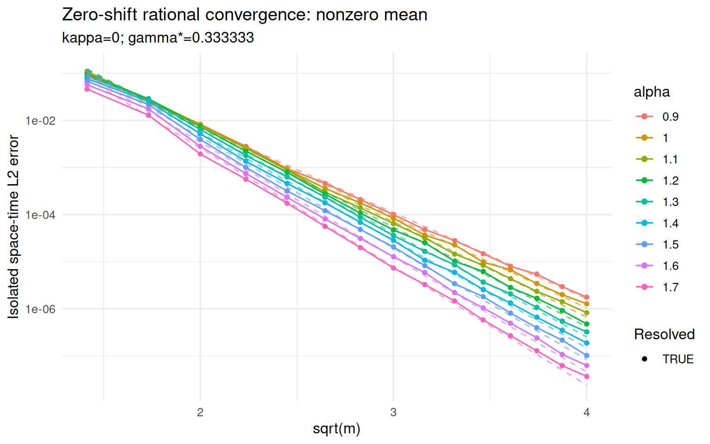
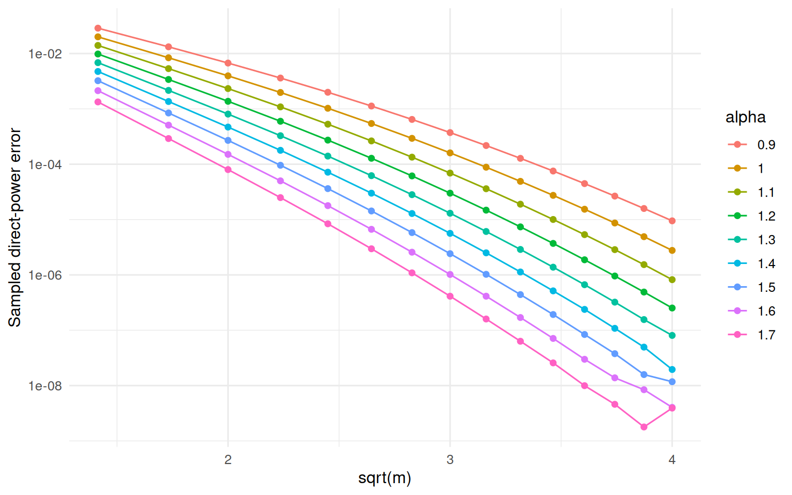

Experiment index · Zero-shift functions · m · tau · h · rough h · Mean-zero counterpart · Single-mode benchmark
This notebook restores a previously computed
nonzero-mean zero-shift experiment. It is separate from
the corrected mean-zero true_diff_* notebooks and from the
single-sine zero-shift benchmark. It uses all nine exponents \(\alpha=0.9,\ldots,1.7\) and the same
connected length-(1,2) tadpole. The full archived numerical results are
copied to a distinct filename; restoring and knitting do not rerun the
PDE computation.
Let \(u_{\rm zero}\) denote the solution with the original smooth mean-zero data. Here the initial condition and forcing are \[ u_0^{\rm added}=1+\frac{10}{\sqrt{16}}\sum_{j\in\mathcal J}e_j, \qquad f^{\rm added}(s,t)=1+10\sin(\pi t)e_7(s), \qquad \mathcal J=\{5,6,8,\ldots,21\}. \] At \(\kappa=0\), the Kirchhoff fractional Laplacian annihilates constants, so \[ u_{\rm added}(s,t)=u_{\rm zero}(s,t)+1+t, \qquad \bar u(t)=1+t,\qquad M(t)=3(1+t). \] This identity holds for any of the reported alpha values and diffusion coefficients. It describes the same centered diffusion with an additional uniform component supplied by the forcing. The positive-mode initial norm is 10; the full initial norm is \(\sqrt{103}\). The total mass increases because the forcing has mean 1.
At matching FEM and BE parameters, the numerical solutions satisfy \[ U_{\rm added}^k=U_{\rm zero}^k+(1+t_k)\mathbf1 \] in exact arithmetic. The solver handles this constant component exactly through the separate mean recurrence; it does not approximate it using BRASIL.
The computation chunk has eval=FALSE. Missing results or
incompatible scientific settings stop knitting with a manual-run
instruction. Internal tests remain in DOCS/NAP; no test
suite runs during knitting.
knitr::opts_chunk$set(message=FALSE,warning=TRUE,error=FALSE,cache=FALSE,
dev="png",fig.width=8,fig.height=5)
if(!requireNamespace("ggplot2",quietly=TRUE)) stop("Install ggplot2 for the figures.")The defaults below match the archived numerical run. They are not
silently replaced with the current mean-zero study’s defaults.
workers affects execution only. All outputs have a distinct
nonzero_mean_ prefix.
T_final <- 1
kappa <- 0
gamma_star <- 1/3
alpha_vector <- seq(0.9,1.7,0.1)
diffusion <- 1
h <- 0.02
tau <- 0.005
m_vector <- 2:16
workers <- 1L
K <- 16L
initial_modes <- c(5L,6L,8:21)
initial_amplitude <- 10
forcing_amplitude <- 10
initial_mean <- 1
forcing_mean <- 1
AAA <- 1
OMEGA <- pi
stopifnot(length(initial_modes)==K,!(7L %in% initial_modes))
output_file <- "data_files/nonzero_mean_conv_in_m_isolated.rds"
# Bundle only the visible parameters above for the shared runner.
settings <- list(study="m",T_final=T_final,kappa=kappa,gamma_star=gamma_star,
alpha=alpha_vector,diffusion=diffusion,workers=workers,initial_modes=initial_modes,
initial_amplitude=initial_amplitude,forcing_amplitude=forcing_amplitude,
initial_mean=initial_mean,forcing_mean=forcing_mean,A=AAA,omega=OMEGA,h=h,tau=tau,m=m_vector)
settings_table <- data.frame(parameter=names(settings),
value=vapply(settings,function(x) paste(x,collapse=", "),character(1)))
knitr::kable(settings_table)| parameter | value | |
|---|---|---|
| study | study | m |
| T_final | T_final | 1 |
| kappa | kappa | 0 |
| gamma_star | gamma_star | 0.333333333333333 |
| alpha | alpha | 0.9, 1, 1.1, 1.2, 1.3, 1.4, 1.5, 1.6, 1.7 |
| diffusion | diffusion | 1 |
| workers | workers | 1 |
| initial_modes | initial_modes | 5, 6, 8, 9, 10, 11, 12, 13, 14, 15, 16, 17, 18, 19, 20, 21 |
| initial_amplitude | initial_amplitude | 10 |
| forcing_amplitude | forcing_amplitude | 10 |
| initial_mean | initial_mean | 1 |
| forcing_mean | forcing_mean | 1 |
| A | A | 1 |
| omega | omega | 3.14159265358979 |
| h | h | 0.02 |
| tau | tau | 0.005 |
| m | m | 2, 3, 4, 5, 6, 7, 8, 9, 10, 11, 12, 13, 14, 15, 16 |
The smooth continuum solution contains the original 17 active
positive eigenmodes and an additional basis function one with
coefficient 1+t. Analytical sine/cosine hat integrals assemble the
initial projection and spatial loads. The sine forcing is averaged
exactly over every BE interval, and the constant forcing contributes the
load Cone. The fixed gap scale is gamma=1/3. At each step the
complete load is split as \[
v=CU^k+\tau(F_{\rm sine}\overline g_{k+1}+C\mathbf1),
\quad q=\frac{\mathbf1^Tv}{3},\quad b=v-qC\mathbf1.
\] The shifted sparse solves act on b; the returned vector is the
centered result plus \(q\mathbf1\).
Here \(q=1+t_{k+1}\), up to roundoff.
The algorithm and its code mapping are documented in
kappa0func.Rmd, Section 4.1.
This study compares sparse rational BE with exact-discrete BE on the same FEM mesh, projection, load, and time grid. Both have the identical constant component 1+t_k. Consequently the added component cancels from \[ E_m^2=\tau\sum_{k=1}^N (U_h^k-U_{h,m}^k)^TC(U_h^k-U_{h,m}^k). \] The isolated rational errors are therefore the same as in a mean-zero run with matching parameters, in exact arithmetic. Small differences between saved runs can arise from floating-point arithmetic. The complete discrete eigensystem supplies the independent BE reference; constants have exactly zero eigenvalue. The numerical-noise control and resolved-order indicator have the same interpretation as in the mean-zero isolated-m notebook. Fit ln(E_m) against sqrt(m); the root-exponential reference exponent is -2pisqrt(alpha/2), not an imposed observed slope.
The full order range m=2:16 is retained: every saved point was resolved above the numerical-noise indicator and every curve decreased. The integer-power control and FEM-eigenbasis comparison are reported below. The constant cancels in this discrete-BE error, so adding the mean does not create a temporal error floor here. No settings are changed merely to make fitted slopes match the root-exponential reference guide.
This is an optional explicit rerun, not part of knitting. The saved restored result is already available. A rerun writes only this notebook’s own output path, leaving the mean-zero experiments and the archive intact.
for(package in c("Matrix","rSPDE","Rcpp","RcppEigen"))
if(!requireNamespace(package,quietly=TRUE)) stop("Missing package: ",package)
true_diff <- local({
extracted <- tempfile("nonzero_mean_functions_",fileext=".R")
on.exit(unlink(extracted),add=TRUE)
knitr::purl("kappa0func.Rmd",output=extracted,quiet=TRUE,documentation=0L)
functions <- new.env(parent=globalenv())
sys.source(extracted,envir=functions)
functions
})
result <- true_diff$kappa0_compute_study(settings,"nonzero_mean_conv_in_m_isolated.Rmd",output_file)if(!file.exists(output_file)) stop("Saved nonzero-mean results are missing. Run setup, parameters, and recompute manually, then knit.")
result <- readRDS(output_file)
scientific_parameters <- setdiff(names(settings),"workers")
mismatch <- scientific_parameters[!vapply(scientific_parameters,function(name)
isTRUE(all.equal(result$parameters[[name]],settings[[name]],tolerance=1e-12)),logical(1))]
if(length(mismatch)) stop("Saved settings differ for: ",paste(mismatch,collapse=", "),
". Run the computation chunk manually for these settings, then knit.")
restored_archive <- !("nonzero_mean_conv_in_m_isolated.Rmd" %in% names(result$source_hashes))
cat(if(restored_archive) "Restored archived computation; original generation time:" else "Computation generated:",
result$generated_at,"\nSaved worker count:",result$parameters$workers,"\n")## Restored archived computation; original generation time: 2026-11-21 12:59:35 +03
## Saved worker count: 1The benchmark slopes describe the theoretical rate scale. The
observed fits use the computed data below; they are not replaced by the
benchmark. For smooth data, max_mass_error is the maximum
absolute discrepancy from the discrete mass recurrence over the entire
trajectory. Here the expected mass grows as 3(1+t); the diagnostic
checks its balance, not conservation.
knitr::kable(result$rates,digits=6)| alpha | reference | observed | resolved_only | resolved_orders |
|---|---|---|---|---|
| 0.9 | -4.214889 | -4.253239 | -4.253239 | 15 |
| 1.0 | -4.442883 | -4.427347 | -4.427347 | 15 |
| 1.1 | -4.659735 | -4.605740 | -4.605740 | 15 |
| 1.2 | -4.866934 | -4.793673 | -4.793673 | 15 |
| 1.3 | -5.065666 | -4.951309 | -4.951309 | 15 |
| 1.4 | -5.256890 | -5.103633 | -5.103633 | 15 |
| 1.5 | -5.441398 | -5.253447 | -5.253447 | 15 |
| 1.6 | -5.619852 | -5.402699 | -5.402699 | 15 |
| 1.7 | -5.792811 | -5.553413 | -5.553413 | 15 |
d <- result$results
d$alpha_label <- factor(d$alpha,levels=settings$alpha)
if (settings$study=="m") {
p <- ggplot2::ggplot(d,ggplot2::aes(sqrt(m),error,colour=alpha_label,group=alpha_label))+
ggplot2::geom_line()+ggplot2::geom_point(ggplot2::aes(shape=resolved))+
ggplot2::scale_y_log10()+ggplot2::labs(x="sqrt(m)",y="Isolated space-time L2 error",
colour="alpha",shape="Resolved",title="Zero-shift rational convergence: nonzero mean")
} else {
p <- ggplot2::ggplot(d,ggplot2::aes(axis,error,colour=alpha_label,group=alpha_label))+
ggplot2::geom_line()+ggplot2::geom_point()+ggplot2::scale_x_log10()+
ggplot2::scale_y_log10()+ggplot2::labs(x=if(settings$study=="tau") "tau" else "h",
y="Sampled space-time L2 error",colour="alpha",title="Zero-shift convergence: nonzero mean")
}
# Reference curves retain their prescribed slope and are geometrically
# anchored to the data. They are guides, not additional computed errors.
guides <- do.call(rbind,lapply(settings$alpha,function(a) {
x <- d[d$alpha==a,]
power <- if(settings$study=="m") -2*pi*sqrt(a/2) else if(settings$study=="tau") 1 else 2
xx <- if(settings$study=="m") sqrt(x$m) else log(x$axis)
if(settings$study=="rough_h") power <- a
x$guide <- exp(mean(log(x$error)-power*xx)+power*xx)
x
}))
guides$alpha_label <- factor(guides$alpha,levels=settings$alpha)
p <- p+ggplot2::geom_line(data=guides,ggplot2::aes(y=guide),linetype="dashed",alpha=0.6)+
ggplot2::theme_minimal(base_size=12)+ggplot2::labs(subtitle=sprintf("kappa=0; gamma*=%g",settings$gamma_star))
print(p)
figure_dir <- "data_files/nonzero_mean_conv_in_m_isolated"
dir.create(figure_dir,recursive=TRUE,showWarnings=FALSE)
ggplot2::ggsave(file.path(figure_dir,"convergence.pdf"),p,width=8,height=5)u <- result$unit_errors
u$alpha_label <- factor(u$alpha,levels=settings$alpha)
power_plot <- ggplot2::ggplot(u,ggplot2::aes(sqrt(m),error,colour=alpha_label))+
ggplot2::geom_line()+ggplot2::geom_point()+ggplot2::scale_y_log10()+
ggplot2::labs(x="sqrt(m)",y="Sampled direct-power error",colour="alpha")+
ggplot2::theme_minimal(base_size=12)
print(power_plot)
ggplot2::ggsave(file.path(figure_dir,"direct_power.pdf"),power_plot,width=8,height=5)
knitr::kable(result$control,digits=12,caption="Integer-power control: no rational approximation")| alpha | m | axis | error | product_error | absolute_error_disagreement | final_state_gap_C | max_mass_error |
|---|---|---|---|---|---|---|---|
| 2 | 2 | 2 | 0 | 0 | 0 | 0 | 0 |
knitr::kable(result$spectrum,digits=12,caption="Discrete spectrum diagnostics")| dimension | positive_gap | relative_residual | C_orthogonality_error | estimated_dense_mib |
|---|---|---|---|---|
| 150 | 2.467604 | 0 | 0 | 3.433228 |
knitr::kable(result$results,digits=12)| alpha | m | axis | error | product_error | absolute_error_disagreement | final_state_gap_C | max_mass_error | noise_indicator | resolved |
|---|---|---|---|---|---|---|---|---|---|
| 0.9 | 2 | 2 | 1.102210e-01 | 1.102210e-01 | 0 | 0 | 0 | 0 | TRUE |
| 0.9 | 3 | 3 | 2.567312e-02 | 2.567312e-02 | 0 | 0 | 0 | 0 | TRUE |
| 0.9 | 4 | 4 | 8.264619e-03 | 8.264619e-03 | 0 | 0 | 0 | 0 | TRUE |
| 0.9 | 5 | 5 | 2.805337e-03 | 2.805337e-03 | 0 | 0 | 0 | 0 | TRUE |
| 0.9 | 6 | 6 | 9.436366e-04 | 9.436366e-04 | 0 | 0 | 0 | 0 | TRUE |
| 0.9 | 7 | 7 | 4.632696e-04 | 4.632696e-04 | 0 | 0 | 0 | 0 | TRUE |
| 0.9 | 8 | 8 | 2.087755e-04 | 2.087755e-04 | 0 | 0 | 0 | 0 | TRUE |
| 0.9 | 9 | 9 | 9.981898e-05 | 9.981898e-05 | 0 | 0 | 0 | 0 | TRUE |
| 0.9 | 10 | 10 | 4.812975e-05 | 4.812975e-05 | 0 | 0 | 0 | 0 | TRUE |
| 0.9 | 11 | 11 | 2.816125e-05 | 2.816125e-05 | 0 | 0 | 0 | 0 | TRUE |
| 0.9 | 12 | 12 | 1.490184e-05 | 1.490184e-05 | 0 | 0 | 0 | 0 | TRUE |
| 0.9 | 13 | 13 | 7.976569e-06 | 7.976569e-06 | 0 | 0 | 0 | 0 | TRUE |
| 0.9 | 14 | 14 | 5.434647e-06 | 5.434647e-06 | 0 | 0 | 0 | 0 | TRUE |
| 0.9 | 15 | 15 | 2.960385e-06 | 2.960385e-06 | 0 | 0 | 0 | 0 | TRUE |
| 0.9 | 16 | 16 | 1.774393e-06 | 1.774393e-06 | 0 | 0 | 0 | 0 | TRUE |
| 1.0 | 2 | 2 | 1.068508e-01 | 1.068508e-01 | 0 | 0 | 0 | 0 | TRUE |
| 1.0 | 3 | 3 | 2.708808e-02 | 2.708808e-02 | 0 | 0 | 0 | 0 | TRUE |
| 1.0 | 4 | 4 | 8.234617e-03 | 8.234617e-03 | 0 | 0 | 0 | 0 | TRUE |
| 1.0 | 5 | 5 | 2.762041e-03 | 2.762041e-03 | 0 | 0 | 0 | 0 | TRUE |
| 1.0 | 6 | 6 | 9.071923e-04 | 9.071923e-04 | 0 | 0 | 0 | 0 | TRUE |
| 1.0 | 7 | 7 | 3.608257e-04 | 3.608257e-04 | 0 | 0 | 0 | 0 | TRUE |
| 1.0 | 8 | 8 | 1.779087e-04 | 1.779087e-04 | 0 | 0 | 0 | 0 | TRUE |
| 1.0 | 9 | 9 | 8.327345e-05 | 8.327345e-05 | 0 | 0 | 0 | 0 | TRUE |
| 1.0 | 10 | 10 | 3.686248e-05 | 3.686248e-05 | 0 | 0 | 0 | 0 | TRUE |
| 1.0 | 11 | 11 | 2.269911e-05 | 2.269911e-05 | 0 | 0 | 0 | 0 | TRUE |
| 1.0 | 12 | 12 | 9.791167e-06 | 9.791167e-06 | 0 | 0 | 0 | 0 | TRUE |
| 1.0 | 13 | 13 | 6.742645e-06 | 6.742645e-06 | 0 | 0 | 0 | 0 | TRUE |
| 1.0 | 14 | 14 | 3.442657e-06 | 3.442657e-06 | 0 | 0 | 0 | 0 | TRUE |
| 1.0 | 15 | 15 | 2.001240e-06 | 2.001240e-06 | 0 | 0 | 0 | 0 | TRUE |
| 1.0 | 16 | 16 | 1.282364e-06 | 1.282364e-06 | 0 | 0 | 0 | 0 | TRUE |
| 1.1 | 2 | 2 | 1.016871e-01 | 1.016871e-01 | 0 | 0 | 0 | 0 | TRUE |
| 1.1 | 3 | 3 | 2.837035e-02 | 2.837035e-02 | 0 | 0 | 0 | 0 | TRUE |
| 1.1 | 4 | 4 | 7.994921e-03 | 7.994921e-03 | 0 | 0 | 0 | 0 | TRUE |
| 1.1 | 5 | 5 | 2.570891e-03 | 2.570891e-03 | 0 | 0 | 0 | 0 | TRUE |
| 1.1 | 6 | 6 | 8.812917e-04 | 8.812917e-04 | 0 | 0 | 0 | 0 | TRUE |
| 1.1 | 7 | 7 | 3.006611e-04 | 3.006611e-04 | 0 | 0 | 0 | 0 | TRUE |
| 1.1 | 8 | 8 | 1.390984e-04 | 1.390984e-04 | 0 | 0 | 0 | 0 | TRUE |
| 1.1 | 9 | 9 | 6.465164e-05 | 6.465164e-05 | 0 | 0 | 0 | 0 | TRUE |
| 1.1 | 10 | 10 | 3.193769e-05 | 3.193769e-05 | 0 | 0 | 0 | 0 | TRUE |
| 1.1 | 11 | 11 | 1.455659e-05 | 1.455659e-05 | 0 | 0 | 0 | 0 | TRUE |
| 1.1 | 12 | 12 | 8.457897e-06 | 8.457897e-06 | 0 | 0 | 0 | 0 | TRUE |
| 1.1 | 13 | 13 | 4.374216e-06 | 4.374216e-06 | 0 | 0 | 0 | 0 | TRUE |
| 1.1 | 14 | 14 | 2.350208e-06 | 2.350208e-06 | 0 | 0 | 0 | 0 | TRUE |
| 1.1 | 15 | 15 | 1.420109e-06 | 1.420109e-06 | 0 | 0 | 0 | 0 | TRUE |
| 1.1 | 16 | 16 | 8.258680e-07 | 8.258680e-07 | 0 | 0 | 0 | 0 | TRUE |
| 1.2 | 2 | 2 | 9.475310e-02 | 9.475310e-02 | 0 | 0 | 0 | 0 | TRUE |
| 1.2 | 3 | 3 | 2.870844e-02 | 2.870844e-02 | 0 | 0 | 0 | 0 | TRUE |
| 1.2 | 4 | 4 | 7.400603e-03 | 7.400603e-03 | 0 | 0 | 0 | 0 | TRUE |
| 1.2 | 5 | 5 | 2.230899e-03 | 2.230899e-03 | 0 | 0 | 0 | 0 | TRUE |
| 1.2 | 6 | 6 | 7.881034e-04 | 7.881034e-04 | 0 | 0 | 0 | 0 | TRUE |
| 1.2 | 7 | 7 | 2.724115e-04 | 2.724115e-04 | 0 | 0 | 0 | 0 | TRUE |
| 1.2 | 8 | 8 | 1.078157e-04 | 1.078157e-04 | 0 | 0 | 0 | 0 | TRUE |
| 1.2 | 9 | 9 | 4.727043e-05 | 4.727043e-05 | 0 | 0 | 0 | 0 | TRUE |
| 1.2 | 10 | 10 | 2.521104e-05 | 2.521104e-05 | 0 | 0 | 0 | 0 | TRUE |
| 1.2 | 11 | 11 | 1.023855e-05 | 1.023855e-05 | 0 | 0 | 0 | 0 | TRUE |
| 1.2 | 12 | 12 | 6.191830e-06 | 6.191830e-06 | 0 | 0 | 0 | 0 | TRUE |
| 1.2 | 13 | 13 | 2.833103e-06 | 2.833103e-06 | 0 | 0 | 0 | 0 | TRUE |
| 1.2 | 14 | 14 | 1.667295e-06 | 1.667295e-06 | 0 | 0 | 0 | 0 | TRUE |
| 1.2 | 15 | 15 | 9.226040e-07 | 9.226040e-07 | 0 | 0 | 0 | 0 | TRUE |
| 1.2 | 16 | 16 | 4.757500e-07 | 4.757500e-07 | 0 | 0 | 0 | 0 | TRUE |
| 1.3 | 2 | 2 | 8.638200e-02 | 8.638200e-02 | 0 | 0 | 0 | 0 | TRUE |
| 1.3 | 3 | 3 | 2.768932e-02 | 2.768932e-02 | 0 | 0 | 0 | 0 | TRUE |
| 1.3 | 4 | 4 | 6.433221e-03 | 6.433221e-03 | 0 | 0 | 0 | 0 | TRUE |
| 1.3 | 5 | 5 | 1.799638e-03 | 1.799638e-03 | 0 | 0 | 0 | 0 | TRUE |
| 1.3 | 6 | 6 | 6.305225e-04 | 6.305225e-04 | 0 | 0 | 0 | 0 | TRUE |
| 1.3 | 7 | 7 | 2.344729e-04 | 2.344729e-04 | 0 | 0 | 0 | 0 | TRUE |
| 1.3 | 8 | 8 | 8.748159e-05 | 8.748159e-05 | 0 | 0 | 0 | 0 | TRUE |
| 1.3 | 9 | 9 | 3.586834e-05 | 3.586834e-05 | 0 | 0 | 0 | 0 | TRUE |
| 1.3 | 10 | 10 | 1.658343e-05 | 1.658343e-05 | 0 | 0 | 0 | 0 | TRUE |
| 1.3 | 11 | 11 | 8.590970e-06 | 8.590970e-06 | 0 | 0 | 0 | 0 | TRUE |
| 1.3 | 12 | 12 | 3.699515e-06 | 3.699515e-06 | 0 | 0 | 0 | 0 | TRUE |
| 1.3 | 13 | 13 | 2.084390e-06 | 2.084390e-06 | 0 | 0 | 0 | 0 | TRUE |
| 1.3 | 14 | 14 | 1.074506e-06 | 1.074506e-06 | 0 | 0 | 0 | 0 | TRUE |
| 1.3 | 15 | 15 | 5.452730e-07 | 5.452730e-07 | 0 | 0 | 0 | 0 | TRUE |
| 1.3 | 16 | 16 | 3.254550e-07 | 3.254550e-07 | 0 | 0 | 0 | 0 | TRUE |
| 1.4 | 2 | 2 | 7.710144e-02 | 7.710144e-02 | 0 | 0 | 0 | 0 | TRUE |
| 1.4 | 3 | 3 | 2.530272e-02 | 2.530272e-02 | 0 | 0 | 0 | 0 | TRUE |
| 1.4 | 4 | 4 | 5.215313e-03 | 5.215313e-03 | 0 | 0 | 0 | 0 | TRUE |
| 1.4 | 5 | 5 | 1.363370e-03 | 1.363370e-03 | 0 | 0 | 0 | 0 | TRUE |
| 1.4 | 6 | 6 | 4.569837e-04 | 4.569837e-04 | 0 | 0 | 0 | 0 | TRUE |
| 1.4 | 7 | 7 | 1.781996e-04 | 1.781996e-04 | 0 | 0 | 0 | 0 | TRUE |
| 1.4 | 8 | 8 | 6.871014e-05 | 6.871014e-05 | 0 | 0 | 0 | 0 | TRUE |
| 1.4 | 9 | 9 | 2.838156e-05 | 2.838156e-05 | 0 | 0 | 0 | 0 | TRUE |
| 1.4 | 10 | 10 | 1.077340e-05 | 1.077340e-05 | 0 | 0 | 0 | 0 | TRUE |
| 1.4 | 11 | 11 | 5.941588e-06 | 5.941588e-06 | 0 | 0 | 0 | 0 | TRUE |
| 1.4 | 12 | 12 | 2.572075e-06 | 2.572075e-06 | 0 | 0 | 0 | 0 | TRUE |
| 1.4 | 13 | 13 | 1.332891e-06 | 1.332891e-06 | 0 | 0 | 0 | 0 | TRUE |
| 1.4 | 14 | 14 | 6.638660e-07 | 6.638660e-07 | 0 | 0 | 0 | 0 | TRUE |
| 1.4 | 15 | 15 | 3.507520e-07 | 3.507520e-07 | 0 | 0 | 0 | 0 | TRUE |
| 1.4 | 16 | 16 | 1.887090e-07 | 1.887090e-07 | 0 | 0 | 0 | 0 | TRUE |
| 1.5 | 2 | 2 | 6.733149e-02 | 6.733149e-02 | 0 | 0 | 0 | 0 | TRUE |
| 1.5 | 3 | 3 | 2.180318e-02 | 2.180318e-02 | 0 | 0 | 0 | 0 | TRUE |
| 1.5 | 4 | 4 | 3.948926e-03 | 3.948926e-03 | 0 | 0 | 0 | 0 | TRUE |
| 1.5 | 5 | 5 | 1.002729e-03 | 1.002729e-03 | 0 | 0 | 0 | 0 | TRUE |
| 1.5 | 6 | 6 | 3.184229e-04 | 3.184229e-04 | 0 | 0 | 0 | 0 | TRUE |
| 1.5 | 7 | 7 | 1.212012e-04 | 1.212012e-04 | 0 | 0 | 0 | 0 | TRUE |
| 1.5 | 8 | 8 | 4.838669e-05 | 4.838669e-05 | 0 | 0 | 0 | 0 | TRUE |
| 1.5 | 9 | 9 | 2.054295e-05 | 2.054295e-05 | 0 | 0 | 0 | 0 | TRUE |
| 1.5 | 10 | 10 | 8.286982e-06 | 8.286982e-06 | 0 | 0 | 0 | 0 | TRUE |
| 1.5 | 11 | 11 | 3.402653e-06 | 3.402653e-06 | 0 | 0 | 0 | 0 | TRUE |
| 1.5 | 12 | 12 | 1.816721e-06 | 1.816721e-06 | 0 | 0 | 0 | 0 | TRUE |
| 1.5 | 13 | 13 | 8.125330e-07 | 8.125330e-07 | 0 | 0 | 0 | 0 | TRUE |
| 1.5 | 14 | 14 | 3.978230e-07 | 3.978230e-07 | 0 | 0 | 0 | 0 | TRUE |
| 1.5 | 15 | 15 | 2.165390e-07 | 2.165390e-07 | 0 | 0 | 0 | 0 | TRUE |
| 1.5 | 16 | 16 | 1.019260e-07 | 1.019260e-07 | 0 | 0 | 0 | 0 | TRUE |
| 1.6 | 2 | 2 | 5.712801e-02 | 5.712801e-02 | 0 | 0 | 0 | 0 | TRUE |
| 1.6 | 3 | 3 | 1.755671e-02 | 1.755671e-02 | 0 | 0 | 0 | 0 | TRUE |
| 1.6 | 4 | 4 | 2.823534e-03 | 2.823534e-03 | 0 | 0 | 0 | 0 | TRUE |
| 1.6 | 5 | 5 | 7.494404e-04 | 7.494404e-04 | 0 | 0 | 0 | 0 | TRUE |
| 1.6 | 6 | 6 | 2.328247e-04 | 2.328247e-04 | 0 | 0 | 0 | 0 | TRUE |
| 1.6 | 7 | 7 | 8.071237e-05 | 8.071237e-05 | 0 | 0 | 0 | 0 | TRUE |
| 1.6 | 8 | 8 | 3.116192e-05 | 3.116192e-05 | 0 | 0 | 0 | 0 | TRUE |
| 1.6 | 9 | 9 | 1.276439e-05 | 1.276439e-05 | 0 | 0 | 0 | 0 | TRUE |
| 1.6 | 10 | 10 | 5.877795e-06 | 5.877795e-06 | 0 | 0 | 0 | 0 | TRUE |
| 1.6 | 11 | 11 | 2.206393e-06 | 2.206393e-06 | 0 | 0 | 0 | 0 | TRUE |
| 1.6 | 12 | 12 | 1.047186e-06 | 1.047186e-06 | 0 | 0 | 0 | 0 | TRUE |
| 1.6 | 13 | 13 | 4.938570e-07 | 4.938570e-07 | 0 | 0 | 0 | 0 | TRUE |
| 1.6 | 14 | 14 | 2.430350e-07 | 2.430350e-07 | 0 | 0 | 0 | 0 | TRUE |
| 1.6 | 15 | 15 | 1.081200e-07 | 1.081200e-07 | 0 | 0 | 0 | 0 | TRUE |
| 1.6 | 16 | 16 | 6.281600e-08 | 6.281600e-08 | 0 | 0 | 0 | 0 | TRUE |
| 1.7 | 2 | 2 | 4.611467e-02 | 4.611467e-02 | 0 | 0 | 0 | 0 | TRUE |
| 1.7 | 3 | 3 | 1.294472e-02 | 1.294472e-02 | 0 | 0 | 0 | 0 | TRUE |
| 1.7 | 4 | 4 | 1.934971e-03 | 1.934971e-03 | 0 | 0 | 0 | 0 | TRUE |
| 1.7 | 5 | 5 | 5.648455e-04 | 5.648455e-04 | 0 | 0 | 0 | 0 | TRUE |
| 1.7 | 6 | 6 | 1.749856e-04 | 1.749856e-04 | 0 | 0 | 0 | 0 | TRUE |
| 1.7 | 7 | 7 | 5.627951e-05 | 5.627951e-05 | 0 | 0 | 0 | 0 | TRUE |
| 1.7 | 8 | 8 | 1.996750e-05 | 1.996750e-05 | 0 | 0 | 0 | 0 | TRUE |
| 1.7 | 9 | 9 | 7.351157e-06 | 7.351157e-06 | 0 | 0 | 0 | 0 | TRUE |
| 1.7 | 10 | 10 | 3.280484e-06 | 3.280484e-06 | 0 | 0 | 0 | 0 | TRUE |
| 1.7 | 11 | 11 | 1.467564e-06 | 1.467564e-06 | 0 | 0 | 0 | 0 | TRUE |
| 1.7 | 12 | 12 | 5.799810e-07 | 5.799810e-07 | 0 | 0 | 0 | 0 | TRUE |
| 1.7 | 13 | 13 | 2.685470e-07 | 2.685470e-07 | 0 | 0 | 0 | 0 | TRUE |
| 1.7 | 14 | 14 | 1.291130e-07 | 1.291130e-07 | 0 | 0 | 0 | 0 | TRUE |
| 1.7 | 15 | 15 | 6.220100e-08 | 6.220100e-08 | 0 | 0 | 0 | 0 | TRUE |
| 1.7 | 16 | 16 | 3.675200e-08 | 3.675200e-08 | 0 | 0 | 0 | 0 | TRUE |
knitr::kable(data.frame(package=names(result$package_versions),
version=unname(result$package_versions)))| package | version |
|---|---|
| Matrix | 1.7.3 |
| rSPDE | 2.7.0 |
| Rcpp | 1.1.2 |
| RcppEigen | 0.3.4.0.2 |
The restored RDS is a byte-for-byte copy of the archived full result,
including its original computation timestamp, source hashes, and package
versions. The original source hashes refer to the earlier notebook
names; they are retained as historical provenance and are not relabeled
as a new computation. The restoration manifest is in
DOCS/NAP/true_diff_internal/restored_nonzero_mean_checks.
If you edit parameters, run the manual computation chunk to generate a new result at this notebook’s own output path, then knit again. A new run will record the current helper and this notebook as its sources. The archive is retained, so the original computation remains recoverable. No profile or recompute option causes simulations to run while knitting.